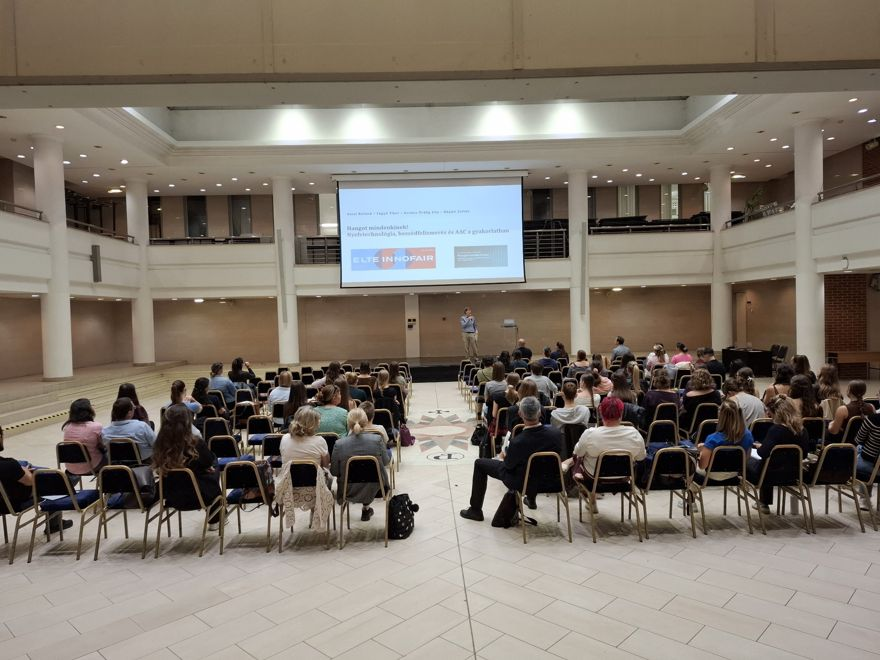
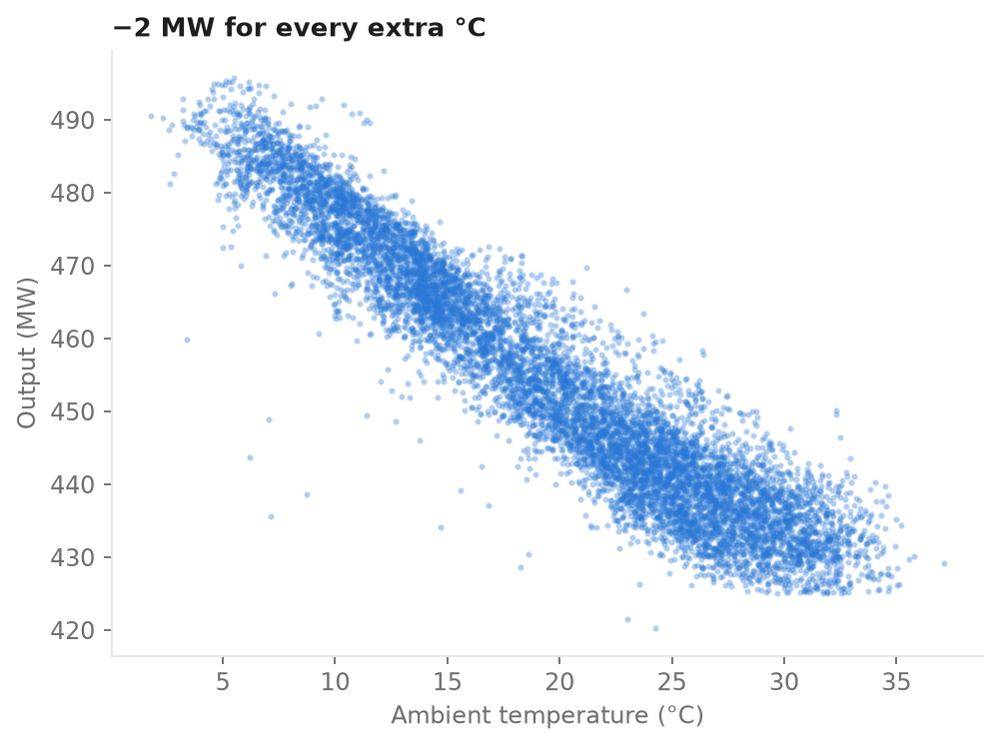
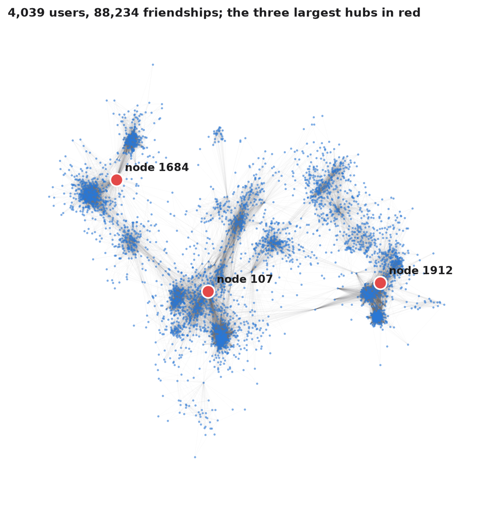
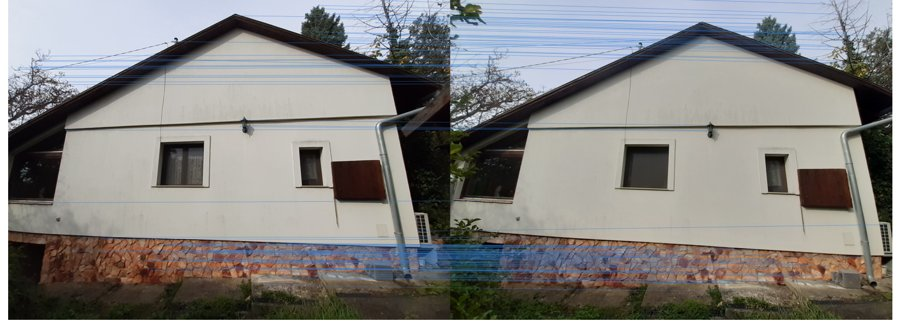
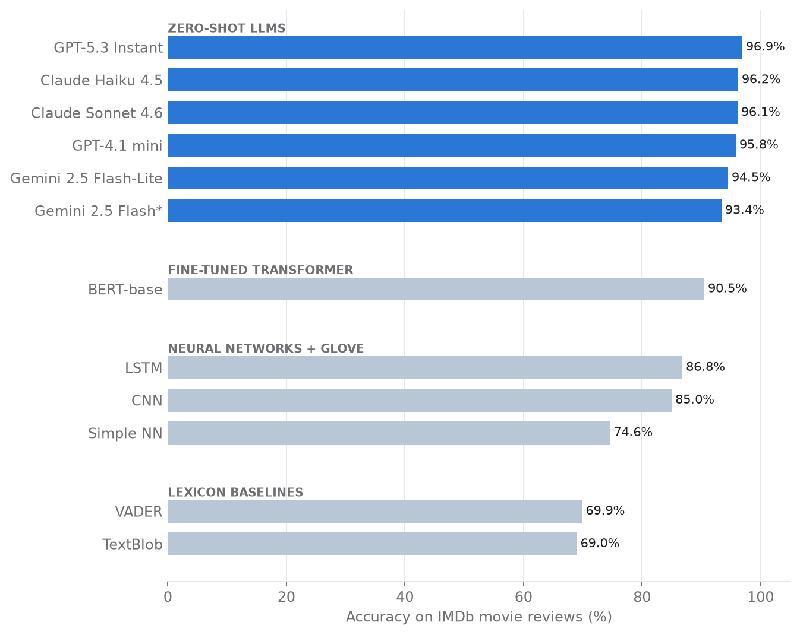
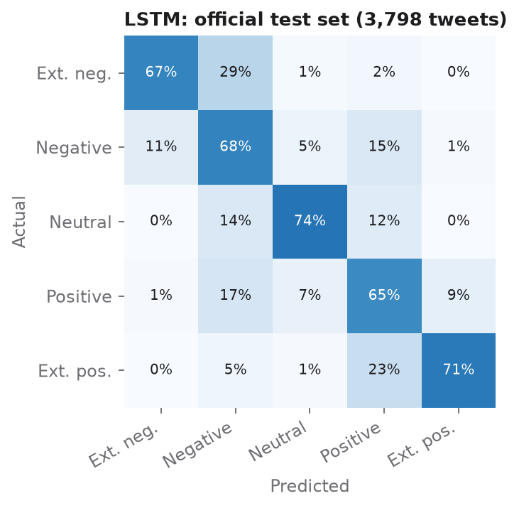

Roland Keszi
AI & Data Science
AI specialist engineer (University of Pannonia - Faculty of Engineering), PhD in sociology (Eötvös Loránd University) and MBA (Corvinus University - Corvinus Business School).
I build and evaluate predictive models, from classical regression to large language models, and I care as much about explaining a result as about the result itself.
Each project below documents the question, the data, the method and the conclusions, with the full code on my GitHub page.
Projects

Voice for everyone! A workshop on language technology, speech recognition and AAC
A workshop I initiated, organised and moderated at ELTE Innofair 2026. My opening talk combined epidemiological estimates of speech disability with a scientometric overview of language technology research. Talks on speech recognition, a robot interviewer and a live demo of the Talkie AAC app followed. 129 people registered.

Patient pathways and hospital resources: process mining
From a hospital event log of 100 patients I reconstruct the care pathway, the time between steps and the staff workload. The tools are directly-follows graphs, Petri nets, BPMN and a heuristic net, and I compare the alpha, inductive and heuristic miners on fitness, precision, generalization and simplicity.

Estimating power plant output with regression models
How much electricity does a combined cycle power plant deliver under given weather conditions? Starting from exploratory analysis, I compared linear, polynomial, lasso, ridge and neural network models. I chose an interpretable linear model (R² = 0.93) and validated it with cross-validation and on an independent sample.

Network structures in research literature, social media and text
A map of the sentiment analysis literature built from OpenAlex data, a scale-free Facebook friendship network of 4,039 users with three dominant hubs, and topical clusters in a similarity network of political tweets.

Finding matching points between photos with SIFT
Keypoint detection and matching on my own photos of two buildings taken from different angles and cameras. The textured house gives more than a thousand reliable matches; the repetitive facade of a block of flats gives far fewer.

From lexicons to large language models: a sentiment benchmark
Twelve approaches classify the same IMDb reviews: lexicon methods, neural networks, a fine-tuned BERT and zero-shot GPT, Claude and Gemini models. The best LLM reaches 96.9% accuracy without any training data.

Sentiment analysis three ways: neural networks and a lexicon
A small neural network with word embeddings classifies IMDb movie reviews as positive or negative with 85% accuracy. On COVID-19 tweets with five sentiment levels, an LSTM that reads words in order beats a simpler dense network (68.5% vs 65.1%). The VADER sentiment lexicon, which needs no training, agrees with human labels on only 54% of airline tweets.

US airline tweets: sentiment dashboard and lexicon evaluation
A bilingual Streamlit dashboard of 14,640 labelled tweets about six US airlines, and an evaluation of the VADER sentiment lexicon against human labels: 54% accuracy, with half of the complaints missed.

The COVID-19 shock in the US labour market
An R pipeline that retrieves official statistics from the Bureau of Labor Statistics API and charts how deep the shock went and how long the recovery took.